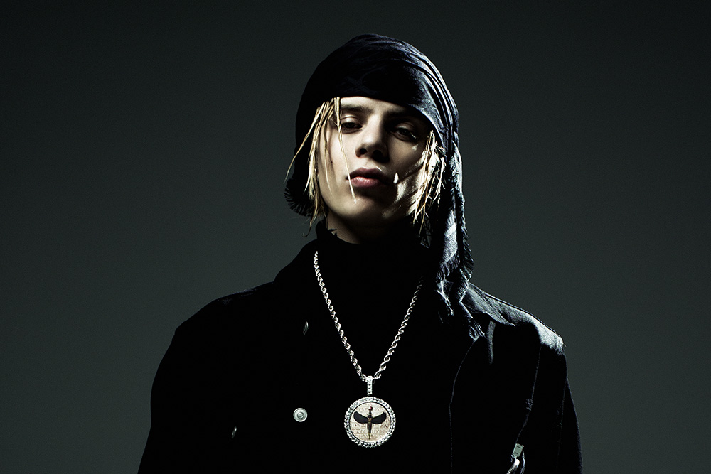
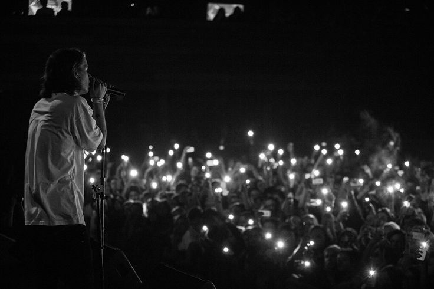
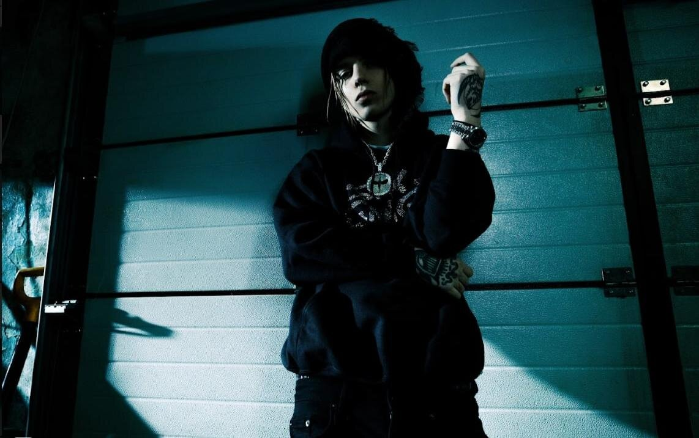
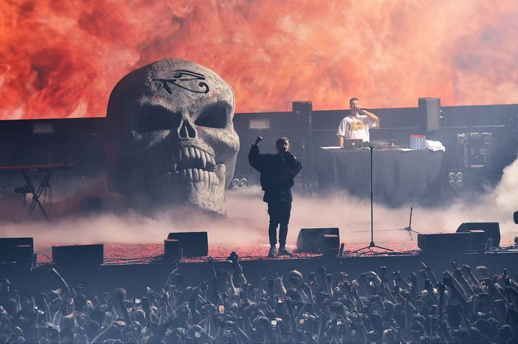
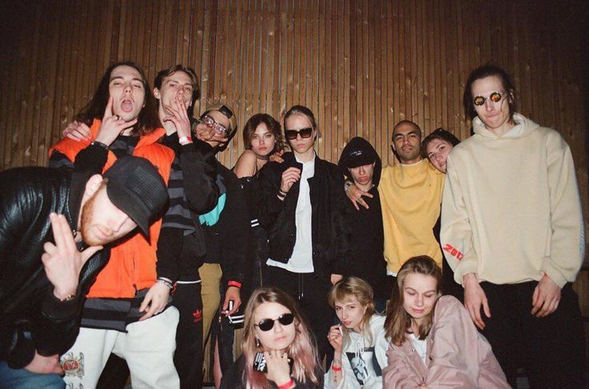

Кто такой PHARAOH?
Глеб Голубин (род. 30 января 1996) — российский рэп-исполнитель, автор песен и основатель лейбла Dead Dynasty. Начал карьеру в 2013 году и быстро стал одним из самых влиятельных артистов новой школы русского рэпа.
Известен своими экспериментами с звуком, мрачной эстетикой и хитам:
- «5 минут назад»
- «Дико, например»
- «Champagne Squirt»
- «Лаллипап»

Галерея




Факты
20+ релизов
Альбомы, микстейпы, синглы
Dead Dynasty
Основал лейбл в 2014
Уникальный стиль
Мрачный звук и лирика